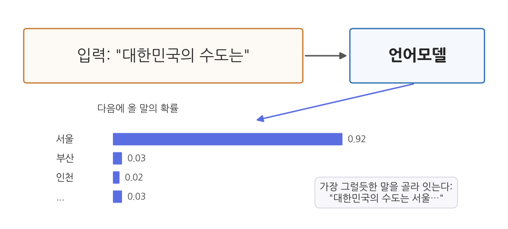
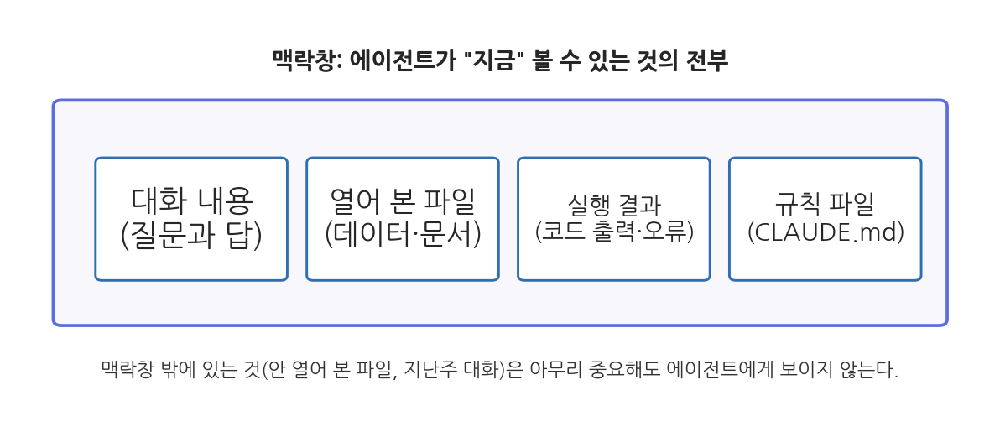
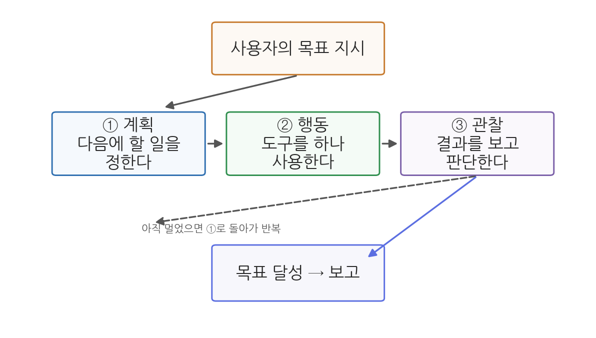
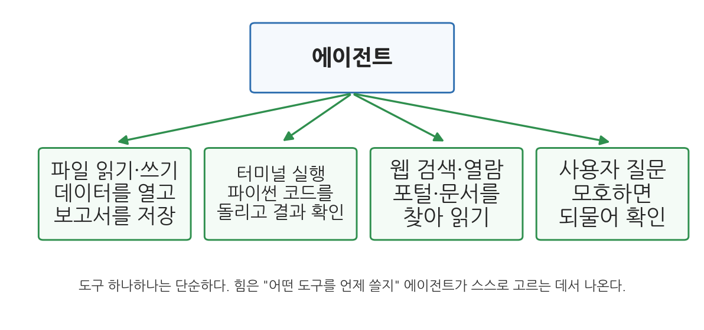

2주차 1회차. AI 에이전트의 작동 원리
어떤 기계도 마법이 아니다. 마법처럼 보이는 것은 우리가 아직 원리를 모르기 때문이다.
이 장에서 배우는 것
1주차에 우리는 에이전트가 "행동하는 AI"라는 것을 배웠고, 실습에서 VSCode 안의 Claude Code와 첫 대화를 나누었다. 아마 두 가지 상반된 인상을 받았을 것이다. 하나는 "생각보다 훨씬 잘한다"는 놀라움이고, 다른 하나는 "가끔 이상한 소리를 자신 있게 한다"는 당혹감이다.
이 장은 그 두 인상을 모두 설명한다. 에이전트가 왜 잘하는지, 그리고 왜 이상해지는지는 같은 원리에서 나오기 때문이다. 자동차 정비사가 될 것이 아니어도 엔진의 원리를 알면 이상한 소리가 날 때 무엇을 의심할지 알 수 있듯이, 에이전트의 속을 한 번 들여다보면 언제 믿고 언제 의심할지 감이 잡힌다. 이 장에서는 수식 없이, 예시만으로 다음을 이해한다.
- 언어모델(LLM)이 "다음에 올 말"을 예측하는 방식으로 글을 만든다는 것
- 맥락창이라는 작업 기억의 크기와 한계
- 환각(그럴듯한 거짓말)이 왜 생기는지, 언제 잘 생기는지
- 에이전트가 계획 → 행동 → 관찰을 반복하는 루프로 일한다는 것
- 에이전트가 쓰는 도구들(파일, 터미널, 웹)과 그 의미
- 이 모든 원리에서 나오는 실천 수칙, 곧 "검증 가능한 단위로 맡기기"
이 장은 안쪽에서 바깥쪽으로 나아간다. "말을 만드는 엔진(LLM)은 어떻게 작동하며, 그 엔진에 손발(도구)을 달면 왜 에이전트가 되는가?"
2.1 엔진: 다음 말 예측으로 글을 만든다 (LLM) → 2.2 작업 기억: 지금 보이는 것만 안다 (맥락창) → 2.3 부작용: 모르는 것도 그럴듯하게 말한다 (환각) → 2.4 루프: 계획하고 행동하고 관찰한다 (에이전트 루프) → 2.5 손발: 파일·터미널·웹이라는 도구 → 2.6 결론: 그래서 일은 이렇게 맡긴다 (신뢰의 원칙).
2.1 LLM은 어떻게 말을 만드는가
스마트폰 자동완성의 아주 거대한 버전
에이전트의 심장에는 대형 언어모델(LLM, large language model)이 있다. 거창한 이름이지만, 하는 일의 뼈대는 여러분이 매일 쓰는 것과 닮았다. 스마트폰 키보드의 자동완성이다. "안녕하"까지 치면 키보드가 "세요"를 제안한다. 수많은 사람의 입력 기록에서 "안녕하" 다음에 "세요"가 올 확률이 압도적으로 높다는 것을 학습했기 때문이다.
LLM은 이 "다음 말 맞히기"를 상상하기 어려운 규모로 키운 것이다. 인터넷의 문서, 책, 코드 등 방대한 텍스트를 읽으며 "이런 말 뒤에는 이런 말이 온다"는 패턴을 학습한다. 그 결과 "대한민국의 수도는"이라는 입력을 받으면, 다음에 올 말로 "서울"이 압도적으로 그럴듯하다고 계산해 낸다.

그림 2-1을 읽어 보자. 모델은 "대한민국의 수도는"이라는 입력을 받고, 다음에 올 수 있는 말 후보들에 확률을 매긴다. "서울"이 0.92로 압도적이고 "부산", "인천"은 미미하다. 모델은 이 중 가장 그럴듯한 말을 골라 문장에 잇고, 늘어난 문장을 다시 입력으로 삼아 그다음 말을 예측한다. 이 과정을 수백, 수천 번 반복하면 문단이 되고 보고서가 된다. 여기서 알 수 있는 것은, LLM이 만드는 긴 글이 사실은 "한 번에 한 조각씩" 이어 붙인 예측의 연쇄라는 점이다.
이때 말의 "조각"은 단어와 정확히 일치하지는 않는다. 모델은 텍스트를 토큰(token)이라는 단위로 쪼개어 다룬다. 짧은 단어는 토큰 하나, 긴 단어는 토큰 여러 개로 쪼개진다. 대략 "토큰은 단어보다 조금 작은 조각"이라고만 알아 두면 이 과목에서는 충분하다.
대형 언어모델(LLM)은 방대한 텍스트에서 말의 패턴을 학습하여, 주어진 글 다음에 올 말을 확률적으로 예측하는 방식으로 글을 생성하는 인공지능 모델이다. Claude, GPT, Gemini가 모두 LLM이다.
토큰(token)은 모델이 텍스트를 다루는 최소 단위로, 단어보다 조금 작은 조각이다. 모델의 처리 용량과 비용은 토큰 수로 계산된다.
확률이라서 생기는 두 가지 성질
"다음 말을 확률로 예측한다"는 원리에서, 사용자가 꼭 알아야 할 두 가지 성질이 바로 따라 나온다.
첫째, 답이 매번 조금씩 다르다(비결정성). 계산기에 2+3을 넣으면 언제나 5가 나온다. 그러나 LLM에게 같은 질문을 두 번 하면 표현이, 때로는 내용까지 달라질 수 있다. 모델이 항상 확률 1등 후보만 고르는 것이 아니라 약간의 무작위성을 섞어 고르기 때문이다. 무작위성 덕분에 글이 다채로워지지만, 대신 "아까는 이렇게 답했는데 지금은 다르게 답하는" 일이 자연스럽게 생긴다. 다음 회차 실습에서 직접 확인해 본다.
둘째, "그럴듯함"과 "옳음"은 다르다. 모델이 최적화하는 것은 어디까지나 말의 그럴듯함이다. 세상 지식의 대부분에서는 그럴듯한 말이 옳은 말과 일치한다("수도는 서울"). 그러나 둘이 갈라지는 지점이 반드시 있고, 그 지점에서 환각이 태어난다. 2.3절에서 자세히 본다.
학습데이터의 그림자
LLM의 지식은 학습에 쓰인 텍스트에서 온다. 여기서 세 가지 한계가 나온다. 첫째, 지식의 마감일이 있다. 학습데이터가 어느 시점까지의 텍스트라면 그 뒤에 일어난 일(작년의 인구 통계, 지난달의 법 개정)은 모델 안에 없다. 둘째, 텍스트가 적은 영역에서는 약하다. 영어 자료가 풍부한 주제에 비해, 한국의 특정 시군구 조례나 소규모 통계처럼 문서 자체가 드문 주제에서는 패턴 학습이 얕다. 셋째, 학습데이터의 편향이 스며든다. 데이터에 많이 등장한 관점이 "그럴듯한 답"이 되기 쉽다.
다행히 에이전트는 이 한계를 도구로 보완할 수 있다. 최신 통계가 필요하면 웹을 검색하거나 KOSIS에서 데이터를 받아 오면 되고(2.5절), 특정 문서에 근거해야 하면 그 문서를 직접 읽히면 된다(11주차의 그라운딩). 중요한 것은 "모델의 기억"과 "방금 확인한 사실"을 구별하는 감각이다.
2.2 맥락창: 에이전트의 작업 기억
지금 책상 위에 놓인 것만 보인다
LLM에게는 사람의 장기 기억 같은 것이 없다. 대화를 하면 할수록 나를 알아 가는 친구를 기대하기 쉽지만, 실제 구조는 다르다. 모델이 답을 만들 때 참고할 수 있는 것은 맥락창(context window)이라 부르는 한정된 공간에 지금 들어 있는 내용뿐이다.

그림 2-2가 보여 주듯, 맥락창 안에는 지금까지의 대화 내용, 에이전트가 열어 본 파일, 코드 실행 결과, 그리고 규칙 파일(3주차에 배울 CLAUDE.md) 같은 것이 담긴다. 이 공간은 책상에 비유할 수 있다. 책상 위에 올려 둔 서류는 볼 수 있지만, 서랍이나 옆 방 캐비닛의 서류는 아무리 중요해도 보이지 않는다. 여기서 알 수 있는 것은 두 가지다.
첫째, 에이전트는 내 컴퓨터의 파일을 "다" 알고 있지 않다. 폴더에 데이터 파일이 있어도, 에이전트가 그 파일을 열어 읽기 전에는 내용을 모른다. "분석해 줘"라고만 하고 어떤 파일인지 알려 주지 않으면, 에이전트는 먼저 폴더를 뒤져 파일을 찾는 일부터 해야 한다. 지시할 때 "data 폴더의 sigungu_2023.csv를 읽고"처럼 재료를 짚어 주는 것이 좋은 이유다.
둘째, 대화가 아주 길어지면 앞부분이 잊힐 수 있다. 맥락창은 유한하다. 긴 작업에서 대화가 한도에 가까워지면 오래된 내용부터 요약되거나 밀려난다. 학기 프로젝트처럼 여러 주에 걸친 작업에서 "지난번에 말했잖아"가 통하지 않는 이유이며, 중요한 규칙은 대화가 아니라 파일(CLAUDE.md)에 적어 두어야 하는 이유다.
맥락창(context window)은 모델이 답을 생성할 때 참고할 수 있는 텍스트의 최대 분량이다(토큰 수로 잰다). 대화, 읽은 파일, 실행 결과가 모두 이 안에 들어가야 하며, 맥락창 밖의 정보는 모델에게 존재하지 않는 것과 같다.
어제의 대화창을 닫고 오늘 새 대화를 열면, 에이전트는 어제의 내용을 전혀 모른다. 새 대화는 빈 책상에서 시작한다. 어제 정한 규칙("표는 항상 천 단위 쉼표로")을 오늘도 지키게 하려면, 다시 말해 주거나 CLAUDE.md에 적어 두어야 한다. 이 착각은 초보자가 가장 자주 겪는 혼란이므로 미리 알아 두자.
2.3 환각: 왜 그럴듯한 거짓을 말하는가
시험장에서 아무 답이나 채우는 학생
환각(hallucination)은 AI가 사실이 아닌 내용을 사실처럼 자신 있게 말하는 현상이다. 예를 들어 에이전트에게 "○○군의 2023년 합계출산율을 알려 줘"라고 물었는데, 실제로는 그 수치를 모르면서 "0.72명입니다"라고 답하는 경우다. 숫자의 자릿수도, 말투도 완벽하게 그럴듯해서 더 위험하다.
환각이 왜 생기는지는 2.1절의 원리로 설명된다. 모델은 "다음에 올 그럴듯한 말"을 만들 뿐, 자기가 아는지 모르는지를 근본적으로 따지지 않는다. "○○군의 합계출산율은"이라는 문장 다음에 그럴듯한 것은 "0.7 근처의 소수"다. 그래서 진짜 값을 모르면 그럴듯한 값을 만들어 채운다. 빈칸을 두면 감점이라 아무 답이나 채우고 보는 시험장의 학생과 같다. 악의가 아니라 작동 방식의 부산물이다.
환각이 잘 나오는 곳
경험적으로 환각은 아무 데서나 고르게 나오지 않는다. 다음 세 곳에서 특히 잘 나온다.
- 구체적인 숫자와 고유명사. 특정 연도·특정 지역의 통계값, 법 조항 번호, 논문 제목과 저자. "대략적인 경향"은 맞히면서 "정확한 값"을 지어내는 일이 흔하다.
- 자료가 드문 좁은 주제. 전국 통계보다 읍면동 통계, 유명한 법률보다 지자체 조례에서 환각률이 올라간다. 학습데이터에 관련 텍스트가 적기 때문이다.
- 없는 것을 물을 때. 존재하지 않는 통계나 문서를 물으면 "그런 자료는 없습니다"보다 그럴듯한 창작으로 답하기 쉽다. 다음 회차 실습에서 일부러 이런 질문을 던져 환각을 관찰해 본다.
에이전트 시대의 환각 대처
다행히 에이전트는 챗봇보다 환각에 대처할 수단이 많다. 원리는 하나다. 기억에 의존하게 두지 말고, 확인하게 시키는 것이다. "○○군 합계출산율을 알려 줘" 대신 "KOSIS에서 ○○군 합계출산율을 검색해서, 출처 화면과 함께 알려 줘"라고 지시하면, 에이전트는 기억 속의 그럴듯한 값 대신 방금 조회한 값을 쓴다. 데이터 분석에서는 더 근본적인 해법이 있다. 통계값을 물어보는 대신, 데이터 파일을 주고 그 파일에서 계산하게 하면 된다. 계산 결과는 코드와 함께 남으므로 검증도 가능하다.
그래도 환각은 완전히 사라지지 않는다. 데이터 파일을 줘도 엉뚱한 열을 읽고 계산하거나, 계산은 맞게 해 놓고 해석 문장에서 숫자를 잘못 옮겨 적는 일이 있다. 그래서 최종 방어선은 언제나 사람의 검증이다. 1주차에서 말한 분별이 여기서 작동한다.
사람은 기억을 뒤져 "없음"을 확인하면 모른다고 답한다. LLM에는 그런 조회 절차가 없다. 어떤 질문이 와도 다음 말 예측은 항상 무언가를 출력한다. 최근 모델들은 "확실하지 않습니다"라고 답하도록 훈련이 보강되어 환각이 줄었지만, 원리상 0이 되기는 어렵다. 그래서 좋은 사용자는 모델의 정직함에 기대는 대신, 확인 가능한 구조(출처 제시 요구, 데이터에서 직접 계산)를 지시 안에 만들어 넣는다.
2.4 에이전트 루프: 계획 → 행동 → 관찰 → 반복
엔진에 손발을 달면 에이전트가 된다
여기까지의 LLM은 아직 "말을 만드는 엔진"일 뿐이다. 이 엔진이 어떻게 파일을 읽고 코드를 돌리는 에이전트가 되는가. 답은 의외로 단순하다. 모델에게 도구 사용권을 주고, 목표가 달성될 때까지 같은 순환을 반복시키는 것이다. 이 순환을 에이전트 루프(agent loop)라 부른다.

그림 2-3의 순환을 하나씩 보자. 사용자의 목표 지시를 받으면 에이전트는 ① 계획 단계에서 "다음에 할 일 하나"를 정한다("먼저 데이터 파일을 열어 봐야겠다"). ② 행동 단계에서 도구를 하나 사용한다(파일 읽기). ③ 관찰 단계에서 도구가 돌려준 결과를 보고 판단한다("열 이름이 예상과 다르네. 계획을 수정하자"). 목표에 이르지 못했으면 ①로 돌아가고, 이르렀으면 사용자에게 보고한다.
실제 예: 평균 하나를 구하는 데 일곱 걸음
"data 폴더의 sigungu_2023.csv에서 시군구별 고령인구비율의 평균을 구해 줘"라는 지시를 받은 에이전트의 속마음을 재구성하면 대략 이렇다.
- (계획) 파일이 실제로 있는지, 구조가 어떤지부터 봐야겠다. → (행동) data 폴더의 파일 목록을 조회 → (관찰) sigungu_2023.csv가 있다.
- (계획) 파일의 앞부분을 읽어 열 이름을 확인하자. → (행동) 파일 앞 몇 줄 읽기 → (관찰) "고령인구비율"이라는 열이 있고, 값은 숫자로 보인다.
- (계획) pandas로 평균을 내는 코드를 짜서 실행하자. → (행동) 터미널에서 파이썬 코드 실행 → (관찰) 오류 발생. 한글 인코딩 문제로 파일을 못 읽었다.
- (계획) 인코딩 옵션을 바꿔 다시 시도하자. → (행동) 수정한 코드 실행 → (관찰) 평균 24.98이 출력되었다.
- (계획) 목표 달성. 결과를 보고하자. → "전국 229개 시군구의 고령인구비율 평균은 약 25.0%입니다."
주목할 점이 세 가지다. 첫째, 에이전트는 큰 목표를 잘게 쪼개 한 걸음씩 나아간다. 둘째, 3번 걸음처럼 실패가 일어나도 관찰 단계에서 이를 인지하고 계획을 수정한다. 오류가 났다고 멈추거나 사용자에게 떠넘기지 않고 스스로 재시도하는 것, 이것이 에이전트의 실용적 가치의 큰 부분이다. 셋째, 그럼에도 각 걸음은 여전히 LLM의 "다음 말 예측"이다. 계획도, 코드도, 판단도 결국은 확률적으로 생성된 텍스트이므로, 2.1-2.3절의 한계(비결정성, 환각)가 루프의 매 걸음에 스며 있다.
에이전트 루프(agent loop)는 에이전트가 목표를 이룰 때까지 반복하는 "계획 수립 → 도구 사용(행동) → 결과 관찰"의 순환이다. 사람의 개입 없이 여러 걸음을 이어 갈 수 있다는 점이 에이전트를 챗봇과 구별 짓는 핵심 구조다.
루프를 지켜보는 사람의 자리
1주차 실습에서 보았듯, Claude Code는 이 루프를 화면에 그대로 보여 준다. 어떤 파일을 읽었는지, 무슨 명령을 실행하려 하는지, 결과가 무엇이었는지가 대화창에 차례로 나타난다. 위험할 수 있는 행동(파일 삭제, 프로그램 설치)의 앞에서는 멈추어 사용자의 승인을 구한다. 이것이 권한(permission) 절차다. 루프가 투명하게 공개되고 중요한 길목마다 사람의 승인이 끼어드는 구조, 이것이 "에이전트에게 일을 맡기되 통제를 잃지 않는" 장치다. 다음 회차 실습에서 이 로그를 읽는 연습을 한다.
2.5 도구 사용: 에이전트의 손과 발
네 가지 기본 도구

그림 2-4는 Claude Code 같은 에이전트가 쓰는 대표적 도구들이다. 하나씩 뜯어 보면 어느 것도 신비롭지 않다.
- 파일 읽기·쓰기. 폴더 안의 파일을 열어 내용을 맥락창에 담고(읽기), 새 파일을 만들거나 고친다(쓰기). 데이터를 읽고 보고서를 저장하는 일의 기초다.
- 터미널 실행. 컴퓨터에 명령을 내리는 문자 기반 창구인 터미널에서 명령을 실행한다. 파이썬 코드 실행, 프로그램 설치가 모두 이 도구로 이루어진다. 터미널 자체는 4주차에서 차분히 배운다.
- 웹 검색·열람. 인터넷을 검색하고 웹페이지를 읽는다. 모델의 지식 마감일 이후의 정보, 학습데이터에 없는 좁은 정보를 보완한다.
- 사용자 질문. 지시가 모호할 때 되묻는다. 이것도 도구다. 좋은 에이전트는 짐작으로 내달리기 전에 확인한다.
도구 하나하나는 단순하지만, 그림 2-4의 요점은 아래쪽 문장에 있다. 힘은 개별 도구가 아니라 "어떤 도구를 언제 쓸지"를 에이전트가 상황에 맞게 스스로 고르는 데서 나온다. 열 이름이 궁금하면 파일을 읽고, 계산이 필요하면 터미널을 열고, 최신 수치가 필요하면 웹을 검색한다. 이 선택 능력이 루프(2.4절)와 결합할 때, "어린이집 현황을 분석해 줘" 같은 큰 목표가 수십 걸음의 작은 행동으로 풀려 나간다.
도구는 검증의 발판이기도 하다
도구 사용에는 사용자에게 중요한 부수 효과가 있다. 행동의 흔적이 남는다는 것이다. 챗봇의 답변은 머릿속에서 나와 근거를 확인할 수 없지만, 에이전트의 결과물 뒤에는 읽은 파일, 실행한 코드, 그 코드의 출력이 로그로 남는다. "평균이 25.0%"라는 보고가 미덥지 않으면, 에이전트가 실행한 코드를 열어 어느 열로 계산했는지 볼 수 있다. 검증(1주차)이 가능해지는 것은 바로 이 흔적 덕분이다.
2.6 신뢰의 원칙: 검증 가능한 단위로 일을 맡긴다
이 장에서 본 원리들을 한 줄씩 실천 수칙으로 바꾸면 이 과목의 작업 방식이 된다.
표 2-1. 원리에서 수칙으로
| 원리 (이 장에서 배운 것) | 실천 수칙 |
|---|---|
| 답은 확률적 예측이라 매번 다를 수 있다 (2.1) | 중요한 결과는 재현 가능하게 만든다. 말로 받은 답이 아니라 코드와 데이터로 남긴다 |
| 맥락창 밖은 보이지 않는다 (2.2) | 재료(파일, 기준, 규칙)를 지시에 명시한다. 오래 쓸 규칙은 파일로 고정한다 |
| 그럴듯함과 옳음은 다르다 (2.3) | 기억이 아니라 출처에서 답하게 시킨다. 숫자는 데이터에서 계산시킨다 |
| 루프의 매 걸음이 생성이다 (2.4) | 큰일은 잘게 나눠 맡기고, 걸음마다 중간 결과를 확인한다 |
| 행동은 흔적을 남긴다 (2.5) | 로그와 코드를 열어 보는 습관을 들인다. 승인 요청을 습관적으로 누르지 않는다 |
이를 관통하는 한 문장이 이 과목의 표어다. 에이전트에게는 "검증 가능한 단위"로 일을 맡긴다. 한 번에 "보고서 다 써 줘"라고 맡기면 어디가 틀렸는지 찾기 어렵다. "데이터를 읽고 요약표를 만들어 줘 → (확인) → 이 표로 그래프를 그려 줘 → (확인) → 그래프를 해석하는 문단을 써 줘 → (확인)"처럼 나누어 맡기면, 각 단계의 산출물을 눈으로 확인하며 나아갈 수 있다. 카파시가 "짧은 목줄(short leash)"이라 부른 작업 방식이다. 익숙해지고 작업의 성격이 단순해지면 목줄을 조금씩 늘려도 된다. 그 조절 감각이 1주차에서 말한 자율성 조절이다.
요약
에이전트의 심장인 LLM은 방대한 텍스트에서 학습한 패턴으로 "다음에 올 말"을 확률적으로 예측하여 글을 만든다. 그래서 답이 매번 조금씩 다르고(비결정성), 그럴듯함이 옳음을 보장하지 않는다. 모델이 참고할 수 있는 것은 맥락창에 지금 들어 있는 내용뿐이며, 대화창을 닫으면 잊히고 열지 않은 파일은 보이지 않는다. 모르는 것을 그럴듯하게 채우는 환각은 구체적 숫자, 좁은 주제, 없는 것을 물을 때 잘 생기며, 출처 확인과 데이터 기반 계산을 지시에 내장하면 크게 줄일 수 있다. LLM에 도구(파일, 터미널, 웹, 되묻기)를 주고 계획 → 행동 → 관찰을 반복시킨 것이 에이전트이며, 행동의 로그가 남아 검증이 가능해진다. 결론은 하나의 표어로 모인다. 검증 가능한 단위로 맡기고, 단계마다 확인한다.
연습문제
2-1. 환각 위험 순위. 다음 네 질문을 에이전트에게 (도구 사용 없이) 물었을 때 환각이 나올 위험이 높은 순서대로 배열하고, 이유를 써 보라. (a) "평균과 중앙값의 차이를 설명해 줘" (b) "2024년 강원도 양구군의 합계출산율을 알려 줘" (c) "한국의 저출산 경향을 개괄해 줘" (d) "『지방자치법』 제3조 2항의 내용을 알려 줘"
2-2. 맥락창 추론. 어제 에이전트와 두 시간 동안 인구 데이터를 분석하고 대화창을 닫았다. 오늘 새 대화를 열고 "어제 만든 그래프를 조금 수정해 줘"라고 지시하면 어떤 일이 벌어질지 예측하고, 오늘 작업을 순조롭게 시작하기 위한 더 나은 첫 지시문을 써 보라. (힌트: 어제의 산출물은 파일로 폴더에 남아 있다.)
2-3. 루프 재구성. "data 폴더의 CSV에서 인구가 가장 많은 시군구 5곳을 찾아 표로 만들어 줘"라는 지시를 받은 에이전트가 밟을 걸음을, 2.4절의 예시처럼 (계획)-(행동)-(관찰) 형식으로 5걸음 이상 써 보라. 중간에 오류가 한 번 일어나 스스로 고치는 걸음을 반드시 포함하라.
2-4. 지시문 고치기. 원리를 적용해 다음 지시문의 문제를 지적하고 고쳐 써 보라. "우리 시 인구가 요즘 어떤지 분석해서 보고서 완성해 줘."